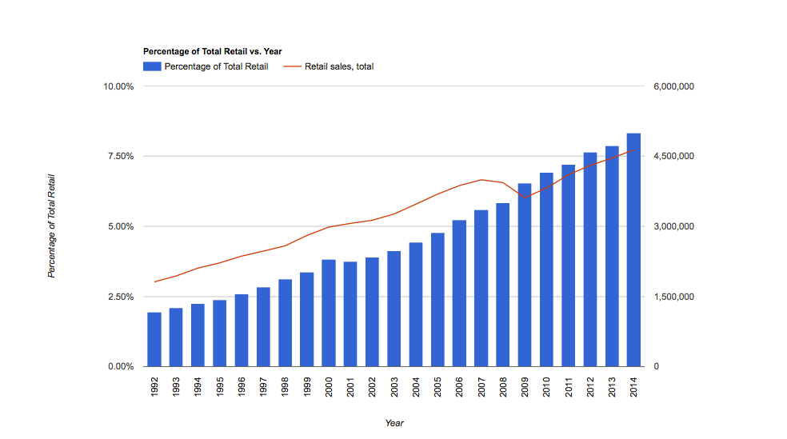
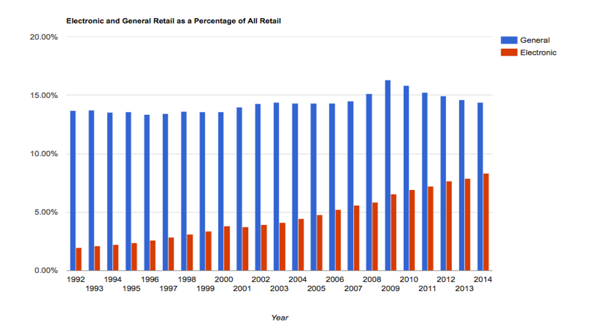

The Big Data Boys looked at federal census data regarding total retail in the US. We were able to acquire data from the US government site: : "data.gov". Here we compare the sales from E-Commerce sites and other electronic sources to total retail. The trend reveals that E-Commerce has increased as a percentage of total retail, and at a higher rate than retail from other sources.
We conclude that this is due to the rise of technology and Big Data. The increase of the usablity of the internet, the increase in the speed of communication, and the increase in delivery speeds have all contributed to rise of E-Commerce and online shopping. The internet is slowly phasing out physical, brick-and-mortar stores.
| Year | Percentage of Total Retail | Retail sales, total |
| 2014 | 8.33% | 4,636,345 |
| 2013 | 7.87% | 4,459,003 |
| 2012 | 7.64% | 4,302,229 |
| 2011 | 7.21% | 4,102,187 |
| 2010 | 6.92% | 3,818,841 |
| 2009 | 6.53% | 3,612,947 |
| 2008 | 5.83% | 3,935,505 |
| 2007 | 5.60% | 3,995,182 |
| 2006 | 5.22% | 3,871,573 |
| 2005 | 4.77% | 3,689,283 |
| 2004 | 4.44% | 3,473,048 |
| 2003 | 4.12% | 3,262,731 |
| 2002 | 3.91% | 3,128,552 |
| 2001 | 3.75% | 3,062,268 |
| 2000 | 3.81% | 2,983,276 |
| 1999 | 3.36% | 2,803,090 |
| 1998 | 3.11% | 2,581,762 |
| 1997 | 2.84% | 2,468,767 |
| 1996 | 2.59% | 2,361,549 |
| 1995 | 2.38% | 2,217,616 |
| 1994 | 2.23% | 2,105,235 |
| 1993 | 2.10% | 1,937,628 |
| 1992 | 1.94% | 1,811,237 |
| Year | General | Electronic |
| 2014 | 14.38% | 8.33% |
| 2013 | 14.62% | 7.87% |
| 2012 | 14.93% | 7.64% |
| 2011 | 15.23% | 7.21% |
| 2010 | 15.81% | 6.92% |
| 2009 | 16.30% | 6.53% |
| 2008 | 15.12% | 5.83% |
| 2007 | 14.48% | 5.60% |
| 2006 | 14.32% | 5.22% |
| 2005 | 14.32% | 4.77% |
| 2004 | 14.32% | 4.44% |
| 2003 | 14.37% | 4.12% |
| 2002 | 14.27% | 3.91% |
| 2001 | 13.96% | 3.75% |
| 2000 | 13.55% | 3.81% |
| 1999 | 13.56% | 3.36% |
| 1998 | 13.60% | 3.11% |
| 1997 | 13.42% | 2.84% |
| 1996 | 13.35% | 2.59% |
| 1995 | 13.55% | 2.38% |
| 1994 | 13.55% | 2.23% |
| 1993 | 13.73% | 2.10% |
| 1992 | 13.69% | 1.94% |
We learned the large impact of the technology of the world has on the world of retail. 50 years ago, the majority of the population would never have guessed the quality and power of technology in the year 2016. Our activity demonstrates how e commerce has increased in the past 20 years, which caused the Big Data Boys to learn not only the impact of technology, but also how closely related retail is to technology.
The Big Data Boys would work on creating a more detailed and advanced web page, as well as acquiring more data from a multitude of sources. With these improvements, our project would be able to be more accurate and easier to use. Using more data sources would allow us to corroborate our findings. In addition, since one of our project’s biggest insights is the growth of technology, the more advanced and detailed our web page is the better.